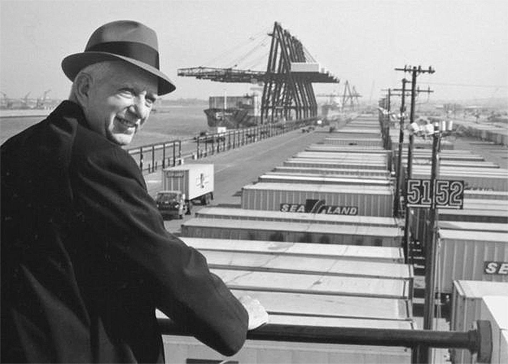

Малкольм Маклин (рожд. в 1913 году в Северной Каролине, США) - инициатор разработки контейнера, а также судна для перевозки контейнеров и автомобильной контейнерной площадки, автором реализации интермодальных грузоперевозок с помощью контейнеров (модели контейнерных перевозок).

Один и тот же контейнер пригоден для перевозки различными вилами транспорта.
Его называют человеком, изменившим мир, т.к. развитие контейнерных перевозок вывело мировую индустрию морских перевозок на новый уровень. В день похорон Маклина (в 2001 году) все контейнеровозы мира издали длинный гудок в честь его памяти. Так они отдали честь основателю всех контейнерных грузоперевозок.